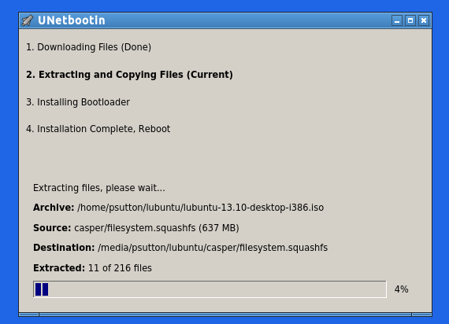

When you have an ISO file or disk image you need to BURN image to cd. When using which ever cd mastering program you have. If you copy to CD you will have a cd with an ISO file on it. You won't be able to boot from that media.
Examples of software for creating your CD / DVD include
K3b
Table below is provided for reference on version used for the manual
| ITEM | DESCRIPTION |
|---|---|
| Application name | k3b |
| Application Description | CD / DVD creator |
| Menu Name | n/a |
| Installed Version | n/a |
| Screenshot version | ? |
| Screenshot Source | Debian 7.6 |
| Website | http://www.nongnu.org/synaptichttp://www.nongnu.org/synaptic |

If you right click on the image file (iso) and open with k3b then you should see the screen above. You need to wait until it completes the md5sum scan, select the burn speed. Note it says BURN I think this is default when you open an iso file.
Click start

This screen shows the progress of the burn. Once complete it will be ejected and Success will be displayed.
Flash Disks - Unetbootin You can use unetbootin to create a bootable flash disk image.
Note There is a bug in UNetbootin under ubuntu 14.10 that stops it from working, this should be fixed by the time ToriOS is ready for final release.
Older versions are working fine.
See the URL ref section for links to the unetbootin website 18
http://unetbootin.sourceforge.net/ [7] and a how to on install ubuntu a usb stick [8]
You can follow the steps below
Creating a boot usb flash disk
(With thanks to Nio Wiklund for some helpful comments with regard to the title of this document)
A good tool for this is UNetbootin, [7] you can install this on Linux, OSX and Windows ,
e.g sudo apt-get install unetbootin or use the install method for the distribution you are using.
you need your root password.
You can then load the software up, you will need your root password
UNetbootin as well as mkusb works in most GNU/Linux distributionss, but I think
Click disk image, ISO can be left as in, then select the box with ? in and select the iso file
select type, usb drive or hard disk, most people are going to want to create a usb boot flash disk.
drive should be the device reference for this disk
make sure you are 100 percent sure, and if you are not sure ASK on forums , IRC or elsewhere first.
I find it helpful to unmount and unplug my external hdd first, In other words if you don't want to write to it, remove that device (if possible) You can wipe you whole file system uf you get the options wrong.
Unplug ALL USB devices you don't need, for example USB flash and hard drives. This will prevent writing to them by accident and will make it easier to select your ToriOS USB stick from the list. DOUBLE CHECK BEFORE YOU CLICK OK.
If you have already downloaded and md5 checked your iso file then you don?t need to worry about the top part,
Click disk image radio button
the drop down menu to the right of this is a between ISO and floppy
you can then click on file search button (the one with ? )
Select if you want to have a persistent space for files.

Type? you can choose between usb and hard disk BE VERY CAREFUL
then select the device, if you select hard disk then the device reference chances to / indicating root of the file system.
REMEMBER that you can wipe your whole file system if you get the options wrong, if you have an external hard disk and a usb disk plugged in I find it helpful to unmount and unplug the external hard disk, gives less target options and is less likely to get wiped by mistake.
Hopefully this how to is useful, please be careful as I am not re- sponsible for data loss, I try and write guides to be generic not explicit guides. I will leave this to the documentation team You can use fdisk and df to determine device references. Read the man pages for more info if you get stuck as for help and say you have looked at man pages, this blog post etc and are still stuck, this shows you have tried to research the issue.
Hopefully this how to is useful, please be careful as I am not responsible for data loss, I try and write guides to be generic not explicit guides. I will leave this to the documentation team
You can use fdisk and df to determine device references. Read the man pages for more info if you get stuck as for help and say you have looked at man pages, this blog post etc and are still stuck, this shows you have tried to research the issue.
The Ubuntu manual should have this information in it too.
man unetbootin
man fdisk
man ls
man df
If you need to format the flash disk, using disks, this is a case of
Unmount the flash disk
Select format
MAKE SURE YOU HAVE THE RIGHT DEVICE SELECTED.
Once this is all done and you are happy with the destination click OK
Progress bar showing how many files have been copied and a percentage

All done you can now reboot, select usb disk from the boot device menu (see your Manual on how to access this) and tryout / install the new OS
unetbootin also works from Windows / Mac
Flash Disks - mkUsb mkUSB - Make USB
See the URL ref section for links to the information on mkusb [17]
mkusb is split now into one GUI program 'mkusb' and two console or text applications, mkusb-nox and mkusb-bas. The GUI version works in ToriOS (as well as in Ubuntu, Fedora, Debian, openSUSE. Arch to mention a few distros).
mkusb-nox 'can do what mkusb can' but without eye-candy. mkusb-bas is basic and can be used in simple distros, where certain tools are not available (I have tested and tweaked it to work in Wary Puppy and Tiny Core).
http://phillw.net/isos/linux-tools/mkusb/mkUSB-quick-start-manual.pdf
http://phillw.net/isos/linux-tools/mkusb/mkUSB-quick-start-manual-nox.pdf
http://phillw.net/isos/linux-tools/mkusb/mkUSB-quick-start-manual-bas.pdf
Using Windpws XP